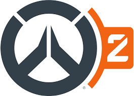
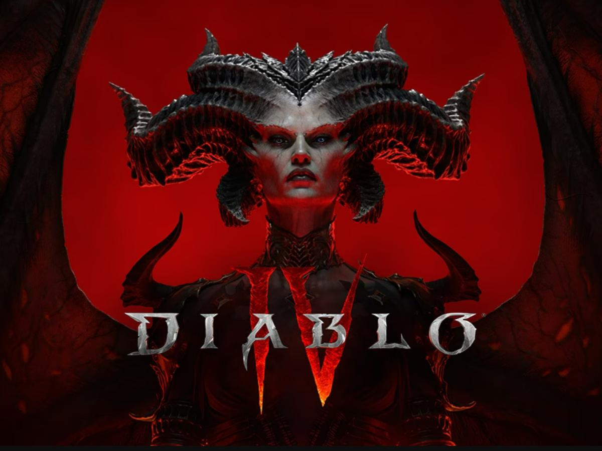
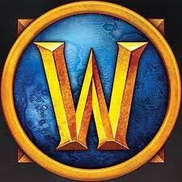

Blizzard Entertainment, Inc. es una empresa desarrolladora y distribuidora de videojuegos
estadounidense con sede en Irvine, California, propiedad de Activision Blizzard.
Blizzard ha logrado cosechar un gran éxito con las sagas Warcraft, Diablo y StarCraft,
así como el MMORPG World of Warcraft, convirtiéndose en un referente
de los géneros de estrategia en tiempo real y MMORPG.
-

Overwatch 2
Overwatch fue un videojuego de disparos en primera persona multijugador, desarrollado por Blizzard Entertainment.
-

Diablo IV
Diablo IV es un videojuego de rol de acción, desarrollado y publicado por Blizzard Entertainment y es la cuarta entrega principal de la serie Diablo.
-

World of Warcraft
World of Warcraft es un videojuego de rol multijugador masivo en línea desarrollado por Blizzard Entertainment.